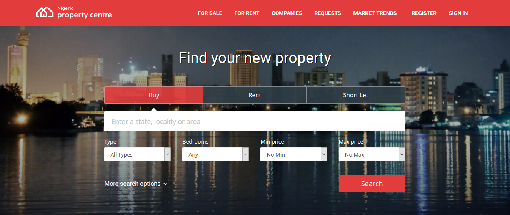

Ndcharles Nweke
Data Scientist | Teacher | Growth Marketing
An engineering graduate who is now in data science/ML. An awesome journey so far🙌. My interests are in real-life applications of data science/ML to business to tackle every day problems.
Let's Connect
LinkedIn | Twitter | Blog
View my Resume
Linear Regression on Lagos Rent

As part of our practice labs, this task is to scrape contents from nigeriapropertycentre. Afterwards, build a regression model to predict the housing price (rent) in Lagos.
Method
Rent data was scraped from nigeriapropertycentre using Python and BeautifulSoup and were preprocessed in Excel to inspect the data for irregularities. EDA was then carried out on the data using python in jupyter-lab environment. Encoding of the categorical variables and model building were done in Python using MultiLabelBinarizer and LinearRegression algorithm; respectively.
Discussions
After splitting, the linear regression model gave a score of 0.71 and an intercept 5.6758. This leaves us with a linear model (where 5.6758 is the intercept; X, the independent variable and; m, the model coefficients.)
==> y = 5.6758 + mX
Also see
- Auto MPG Regression
- This went a step further to use RidgeRegression (normalization algorithm) to perform regression task.
[View my GitHub profile] | [Read the Blog]